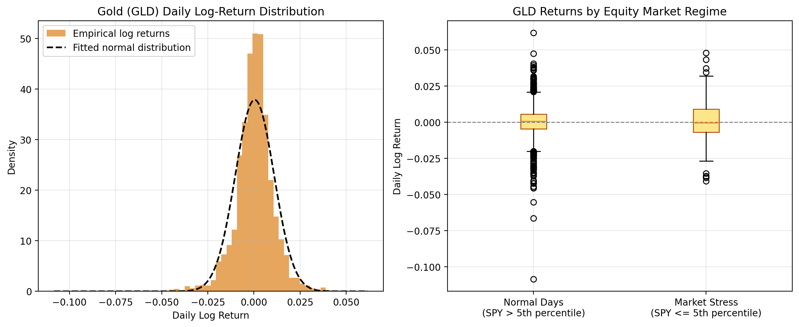
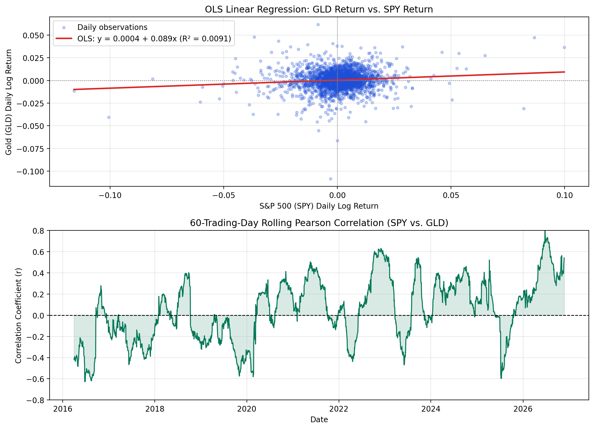

1. Research Question & Data
GLD) provide statistically significant positive returns during extreme equity market downturns (SPY), and how stable is the linear relationship between the two assets over time?
To test gold's role as a portfolio hedge and crisis safe haven, daily adjusted closing prices were collected from Yahoo Finance (yfinance) covering 2,739 trading days between January 2016 and November 2026. Raw prices were transformed into continuously compounded daily log returns, rt = ln(Pt / Pt−1), to ensure stationarity and time-additivity.
2. Methodology & Statistical Results
Two distinct quantitative methods were applied in Python (scipy.stats, numpy, pandas):
- Analysis 1 — Distribution Check & Regime Hypothesis Testing: Jarque–Bera normality tests confirmed severe non-normality (fat tails) in both return series (p < 0.0001). Trading days were then partitioned into Market Stress Days (the worst 5% of S&P 500 returns, threshold ≤ −1.69%, n = 137) and Normal Days (n = 2,602). Both a two-sample Welch's t-test and a non-parametric Mann–Whitney U test were conducted to compare gold's performance across regimes.
- Analysis 2 — OLS Linear Regression & Rolling Correlation: An Ordinary Least Squares (OLS) regression (rGLD = α + β rSPY + ϵ) was estimated over the full sample, complemented by a 60-trading-day rolling Pearson correlation to capture time-varying co-movement.
| Metric / Statistical Test | Result | Interpretation |
|---|---|---|
| Jarque–Bera Normality Test (SPY & GLD) | p < 0.0001 | Rejects normality; heavy-tailed return distributions |
| S&P 500 Stress Threshold (Bottom 5%) | −1.69% (n = 137) | Cutoff defining extreme equity drawdown days |
| GLD Mean Return: Stress vs. Normal Days | +0.0288% vs. +0.0427% | Capital preserved during crashes, no large spike |
| Welch's Two-Sample t-test | t = −0.1070, p = 0.9150 | No statistically significant difference in mean return |
| Mann–Whitney U Test | U = 172,663.5, p = 0.5368 | Confirms robustness against extreme outliers |
| OLS Regression Slope (β) & Fit (R2) | β = 0.0893, R2 = 0.0091 | Near-zero equity sensitivity (<1% variance explained) |
| 60-Day Rolling Pearson Correlation | Min: −0.626 | Max: +0.804 | Mean: 0.045 | Highly regime-dependent; shifts during liquidity shocks |
3. Visualisations

Download High-Resolution Vector PDF (fig1_distributions.pdf)

Download High-Resolution Vector PDF (fig2_regression_correlation.pdf)
4. Economic Interpretation & Conclusion
In financial econometrics (following Baur & Lucey, 2010), an asset is a hedge if it is uncorrelated with stocks on average, and a safe haven if it is uncorrelated or negatively correlated specifically during market turmoil.
The empirical findings demonstrate that gold acts as a strong diversifier (weak hedge) and a weak safe haven for the S&P 500. Over the 10-year horizon, gold's near-zero beta (β = 0.0893, R2 = 0.0091) confirms that equity fluctuations explain virtually none of gold's daily variance. During the worst 5% of S&P 500 trading days, gold neither surges dramatically nor suffers contagion losses (p = 0.9150), effectively preserving capital. However, the 60-day rolling correlation reveals substantial instability (−0.626 to +0.804): during acute liquidity crunches (such as March 2020) or synchronized monetary tightening shocks, gold temporarily co-moves positively with equities before reverting to its neutral baseline.